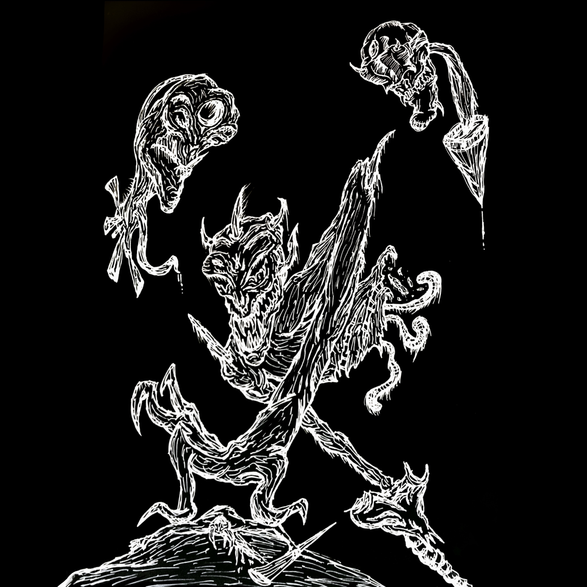
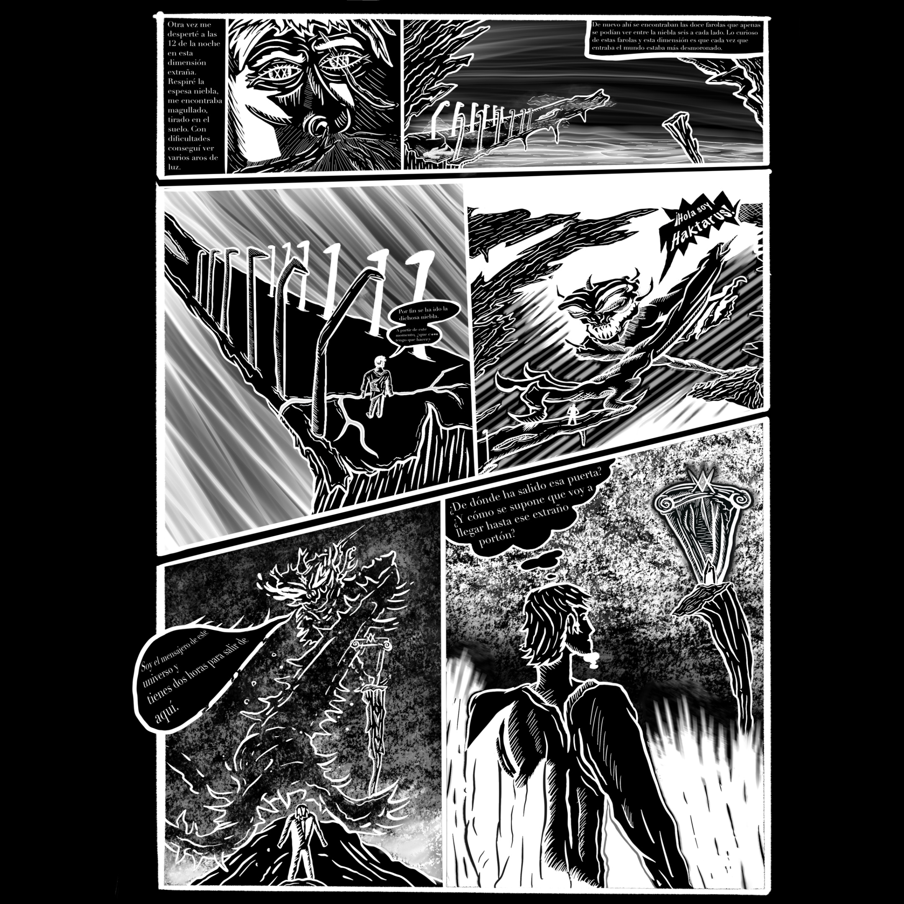
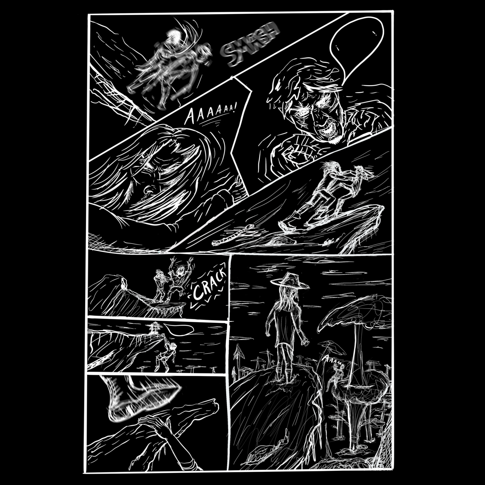

Bienvenido al mundo de Kartovia
Explora la intrigante historia de Evermont y Haktarus, llena de misterio y aventura. Es una novela gráfica que combina elementos de fantasía oscura, horror y drama psicológico. La historia sigue a Evermont, un joven marcado por la tragedia, quien se ve arrastrado a un mundo de sombras y misterios cuando se encuentra con Haktarus, una entidad demoníaca.
A medida que la historia avanza, los lectores serán testigos de una batalla no solo contra fuerzas sobrenaturales, sino también contra las dudas internas de los personajes. Cada capítulo está cuidadosamente diseñado para sumergir al lector en una atmósfera gótica llena de intriga y revelaciones inesperadas. El arte, inspirado en el estilo gótico y medieval, refuerza el tono oscuro de la narrativa, mientras que el guion se centra en el desarrollo de personajes complejos y en la exploración de temas como el sacrificio, la redención y el poder de las decisiones humanas.
Acerca del Cómic
Haktarus es más que un cómic, es una experiencia visual y narrativa que sumerge a los lectores en un universo único. Cada página es una obra de arte, con ilustraciones detalladas y una historia que explora los rincones más oscuros del alma humana.
La trama se desarrolla en Kartovia, una tierra en el borde del colapso, donde las decisiones de unos pocos pueden cambiar el destino de todos. A través de sus personajes, el cómic examina temas de poder, corrupción, y la lucha eterna entre el bien y el mal.
Galería

Escena 1: La oscura ciudad de Evermont al atardecer, donde comienzan los misterios.

Escena 2: Haktarus haciendo su primera aparición en un ritual sombrío.

Escena 3: Un enfrentamiento intenso entre Evermont y sus demonios internos.

Escena 4: La sabiduría de Kronulk guiando a los héroes en un bosque místico.
Personajes
Conoce a los protagonistas de Haktarus y descubre cómo cada uno de ellos juega un papel crucial en el desarrollo de la historia.
Evermont
Un joven que carga con el peso de un pasado traumático. Su valentía y determinación serán puestos a prueba en su viaje para descubrir la verdad.
Haktarus
Una entidad demoníaca de origen incierto, cuyo propósito y lealtades son un misterio. Su influencia en Evermont es tanto una bendición como una maldición.
Kronulk
Una sabia y enigmática mujer, conocedora de los antiguos secretos de Kartovia. Su guía será esencial para los héroes en su búsqueda.
Shavarkunk
El líder de Kartovia, cuya nobleza se ve comprometida por los oscuros desafíos que enfrenta su reino. Su dilema entre deber y moralidad es central en la historia.
Inspiración
Haktarus se inspira en una rica tradición de literatura gótica y horror, combinada con elementos de mitología y folklore de Kartovia. La narrativa toma influencias de autores como H.P. Lovecraft y Bram Stoker, así como de los mitos y leyendas medievales.
El arte refleja esta inspiración, utilizando un estilo oscuro y detallado que captura la esencia de cada escena. Las sombras, las texturas y los colores juegan un papel crucial en la creación de la atmósfera que define a Haktarus.